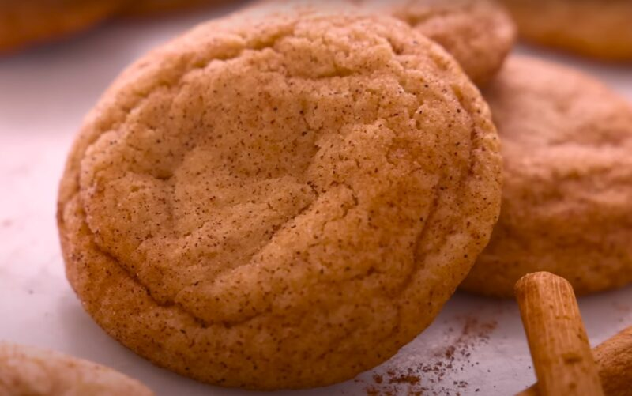

Cinnamon Cookies
Go Back

Description:
Theses cookies offer the best soft and chewy texture ever!
The aroma of the cooking makes it a mouth-watering wait. It's served
with a soft chewy middle and a slight crispy edge.
Ingredients:
- 1 1/4 cups all-purpose flour
- 1 tsp baking powder
- 1/4 tsp salt
- 2 tsp ground cinnamon
- 1/2 cup unsalted butter, softened
- 3/4 cup brown sugar, packed
- 1/4 cup granulated sugar
- 1 large egg
- 1 tsp vanilla extract
Cinnamon Sugar Coating:
- 1/4 cup granulated sugar
- 1 tbsp ground cinnamon
Instructions:
- Preheat your oven to 350°F (175°C) and line two baking sheets with parchment paper.
- Mix the dry ingredients. In a medium bowl, whisk together the flour, baking powder, salt, and cinnamon. Set aside.
- Cream the butter and sugars. In a large bowl, use an electric mixer to beat the softened butter, brown sugar, and granulated sugar until light and fluffy.
- Add the egg and vanilla. Beat in the egg and vanilla extract until well combined.
- Combine the wet and dry ingredients. Gradually add the flour mixture to the wet ingredients, mixing until just combined. Do not overmix.
- Prepare the cinnamon sugar coating. In a small bowl, combine the sugar and cinnamon for the coating.
- Shape the cookies. Scoop out tablespoon-sized balls of dough, roll them in the cinnamon sugar coating, and place them on the prepared baking sheets, spacing them about 2 inches apart.
- Bake to perfection. Bake for 8-10 minutes, or until the edges are just set but the centers are still soft. Let them cool on the baking sheet for a few minutes before transferring to a wire rack to cool completely.
Source